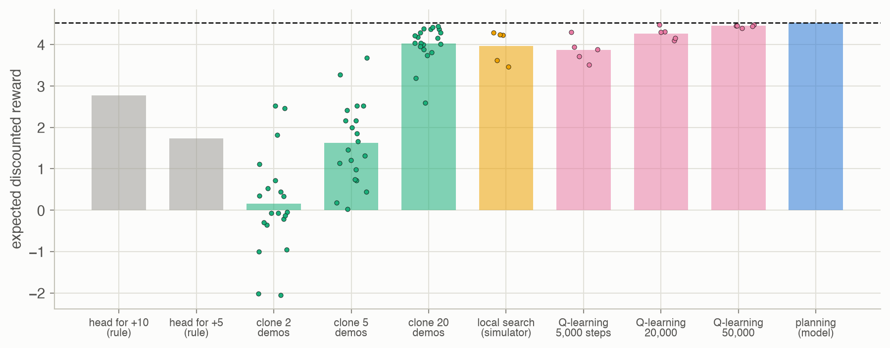

1 · Introduction
Decision making under uncertainty
Big picture
Where this chapter fits
This is the starting point of the book and of this site. It frames the whole subject: an agent repeatedly observes its environment and acts, and it must choose well despite several kinds of uncertainty. The rest of the book is organized around those kinds of uncertainty, one Part each. This page is also a map: each idea below points to the chapter that develops it.
The question: what does it mean to make good decisions when the world is uncertain, and what are the ways to build a system that does?
The short answer: choose actions that maximize expected utility over time, given everything observed so far; build such systems by programming, learning from examples, optimizing in simulation, planning with a model, or learning from experience.
The key ideas at a glance
The observe–act loop. An agent (a person, a robot, or software) receives an observation \(o_t\), chooses an action \(a_t\), and the environment responds. Observations can be noisy or incomplete, and actions can have uncertain effects. A policy says what to do given what has been observed.
Four sources of uncertainty. Outcome uncertainty: actions have random effects. Model uncertainty: we don’t know the rules of the environment exactly. State uncertainty: we can’t see the state directly. Interaction uncertainty: other agents are choosing too. The book’s Parts II–V each add one of these; Part I sets up the probability and utility needed to reason about any of them.
Maximize expected utility. A rational agent chooses the action with the highest expected utility, averaging over what it is uncertain about (Chapter 6). Over time, that becomes maximizing expected discounted reward (Chapter 7).
Five ways to build a decision maker. Write the rules by hand; learn from an expert’s examples; search over policies in simulation; plan with a model; or learn by trial and error. They differ in what the designer must supply: rules, examples, a simulator, a model, or only a reward.
Many fields contributed. Probability and statistics, economics (utility, games), psychology (reinforcement), neuroscience (neural networks), computer science, control engineering and operations research all built parts of the toolkit.
Vocabulary
| Term | Plain meaning |
|---|---|
| Agent | Anything that observes and acts: a person, a robot, a program |
| Observation \(o_t\) | What the agent perceives at time \(t\); possibly noisy or partial |
| Action \(a_t\) | What the agent does at time \(t\) |
| Policy \(\pi\) | A rule for choosing actions from what has been observed |
| Reward, utility | A number saying how good an outcome is |
| Discount factor \(\gamma\) | How much less a reward counts for each step it is delayed |
| Model | A description of how the environment responds to actions |
After this chapter you can
- Describe a decision problem as an observe–act loop, and name its sources of uncertainty.
- Say which Part of the book, and which chapters of this site, address each source.
- Compare the five ways to design a decision maker, and what each requires.
- Compute a discounted return and a maximum-expected-utility decision by hand.
Intuition
TipAnalogy
Learning to cook a new dish. You could follow a recipe exactly (explicit programming), copy what a friend does (learning from examples), try variations and keep what tastes better (optimization), reason from how ingredients behave (planning with a model), or cook it many times and learn from each result (reinforcement learning). The oven may run hot (outcome uncertainty), you don’t fully know the recipe’s quirks (model uncertainty), you can’t see inside the cake (state uncertainty), and someone else keeps adjusting the heat (interaction uncertainty).
We’ll use Hex World throughout this page (Appendix F.1; problem gallery): an agent moves across 24 hexagonal tiles, and each move goes the intended way only 70% of the time, veering to a neighboring direction otherwise. Three tiles end the episode with a reward: +10, +5 or −10. Bumping into the edge costs 1. We score every policy by its expected discounted reward (\(\gamma = 0.9\)) from a random ordinary tile.
Five designers, one problem
The five approaches, each implemented with this site’s code from later chapters:
- Explicit programming: a hand-written rule “always head for the +10 tile” earns 2.77.
- Learning from examples (behavioral cloning, Chapter 18): copying 5 expert demonstrations earns 1.62 on average; 20 demonstrations, 4.02.
- Optimization (Chapter 10): trying random changes to a policy in a simulator, and keeping what helps, earns between 3.46 and 4.28.
- Planning (Chapter 7): computing the best policy from the model earns 4.53, the optimum.
- Reinforcement learning (Chapter 17): Q-learning by trial and error earns between 4.40 and 4.48 after 50,000 steps.
The less the designer knows, the more data the method needs, and planning is only possible with a model. See Figure 3.
Uncertainty changes the right answer
If moves always went the intended way, the best policy would be worth 5.87; at 70% reliability, 4.53; at 40%, 2.59. The best action changes too: at 40% reliability, 5 of the 21 ordinary tiles choose differently than at 70%. Accounting for uncertainty isn’t a correction to a deterministic plan; it changes the plan. See the interactive.
Formalism
The decision problem
At each step \(t\), the agent has seen \(o_1, \dots, o_t\) and chooses \(a_t\). A policy \(\pi\) maps what has been seen to an action. Its quality is the expected discounted sum of rewards it collects, and the goal is the best policy:
\[ \pi^* = \arg\max_\pi\ \mathbb{E}\Big[\sum_{t=1}^{\infty} \gamma^{t-1} r_t \ \Big|\ \pi\Big] \tag{1}\]
In words. Pick the way of acting that collects the most reward on average, counting rewards less the later they come.
Term by term.
- \(r_t\): the reward received at step \(t\), which depends on the state and the action.
- \(\gamma \in [0, 1)\): the discount factor; a reward \(k\) steps away counts \(\gamma^k\) as much. With \(\gamma = 0.9\), a reward 10 steps away counts about a third.
- \(\mathbb{E}[\cdot \mid \pi]\): the average over every source of randomness (outcomes, observations, other agents) when acting by \(\pi\).
Why it holds. It’s a definition, not a theorem, but a well-motivated one: the discounted sum is finite whenever rewards are bounded, and discounting captures both impatience and the risk that the process ends. Parts II–V are about computing or approximating \(\pi^*\) under different uncertainties.
Maximum expected utility
For a single decision, the principle is (developed in Chapter 6):
\[ a^* = \arg\max_a \sum_{s'} P(s' \mid a, o)\, U(s') \tag{2}\]
In words. Choose the action whose possible outcomes, weighted by their probabilities, are best on average.
Term by term.
- \(P(s' \mid a, o)\): the probability that action \(a\) leads to outcome \(s'\), given observation \(o\) (Chapters 2–3 compute such probabilities).
- \(U(s')\): the utility, how much the agent values outcome \(s'\) (Chapter 6).
- The sum is the expected utility of \(a\); the best action maximizes it.
Why it holds. Utility theory (J. von Neumann and O. Morgenstern, Theory of Games and Economic Behavior, 1944) shows that if an agent’s preferences between uncertain outcomes satisfy a few consistency axioms, they can be described by a utility function, and the agent prefers exactly the options with higher expected utility. Over time, Equation 1 is this principle applied to whole sequences of decisions.
Sources of uncertainty, and where they are covered
Five ways to design a decision maker
| Approach | The designer supplies | On this page | Developed in |
|---|---|---|---|
| Explicit programming | the rules themselves | “head for +10” | — |
| Supervised learning | examples of good decisions | behavioral cloning | Ch 18 |
| Optimization | a policy space and a simulator | local search | Ch 10 |
| Planning | a model of the environment | policy iteration | Ch 7, 9, 20 |
| Reinforcement learning | only a reward signal and interaction | Q-learning | Ch 15–17 |
Worked example
A discounted return
A hex-world agent bumps into the edge once (−1), takes two ordinary steps (0 each), then steps onto the +10 tile. With \(\gamma = 0.9\) and the reward counted when it acts on that tile at step 4:
\[ -1 + 0.9 \times 0 + 0.9^2 \times 0 + 0.9^3 \times 10 = -1 + 7.29 = 6.29 \]
Had it reached the +10 tile two steps later, the same reward would count \(0.9^5 \times 10 = 5.90\). Discounting is what makes the agent prefer short routes.
A maximum-expected-utility choice
The agent is on a tile with the −10 tile to the east and a safe ordinary tile to the west. A move goes the intended way with probability 0.7 and veers to each neighboring direction with probability 0.15. Heading east lands on the −10 tile with probability 0.7. Heading west lands there only if the move veers twice around, which can’t happen in one step: probability 0. If the ordinary tiles are worth about 4 and the −10 tile is worth −10:
- east: \(0.7 \times (-10) + 0.3 \times 4 = -5.8\);
- west: \(1.0 \times 4 = 4\).
Maximum expected utility picks west. With these numbers, even a 10% chance of the −10 tile would cost 1.4 in expected utility, so good policies weigh even small risks of landing there; the uncertainty dial below shows how the best actions shift as the risk of veering changes.
In Hex World itself, the best policy’s values range from 0.71 to 8.22 over the ordinary tiles; the rule “head for +10” chooses differently on 10 of them.
Interactive
The uncertainty dial
Slide the probability that a move goes the intended way. The map shows the optimal policy (arrows) and each tile’s value (color: blue good, red bad). Watch which tiles change their action as moves get less reliable.
Algorithms & code
The explicit rule and the local search
The other three approaches use code shown on their own chapters’ pages (linked in Table 3).
def head_for(tiles, target) -> Array:
"""Explicit programming: a hand-written rule. On every tile, pick the
direction whose neighbor is fewest moves from `target` (ignoring that
moves can veer). Reward tiles and the terminal state get action 0."""
tiles = list(tiles)
steps = hex_steps(tiles, target)
policy = np.zeros(len(tiles) + 1, dtype=int) # last entry: terminal
for i, tile in enumerate(tiles):
best = min(range(len(DIRECTIONS)),
key=lambda a: steps.get(neighbor(tile, DIRECTIONS[a]),
np.inf))
policy[i] = best
return policy
def simulated_return(mdp, policy, b, seed, n=100, depth=40) -> float:
"""Average discounted return of a deterministic policy over n simulated
episodes from b. The seed is fixed, so two policies are compared on the
same random draws (common random numbers)."""
rng = np.random.default_rng(seed)
total = 0.0
for _ in range(n):
s = rng.choice(len(b), p=b)
for t in range(depth):
a = policy[s]
total += mdp.gamma ** t * mdp.R[s, a]
s = rng.choice(len(b), p=mdp.T[s, a])
return total / n
def local_search(mdp, b, rng, proposals=300, n=100, depth=40, seed=0):
"""Optimization: start from a random policy; repeatedly change one
state's action at random and keep the change if the simulated return
improves. It uses the simulator only as a black box, never T or R
directly. Returns the policy and the simulated return after each
proposal."""
n_s, n_a = mdp.R.shape
policy = rng.integers(n_a, size=n_s)
best = simulated_return(mdp, policy, b, seed, n, depth)
history = [best]
for _ in range(proposals):
trial = policy.copy()
s = rng.integers(n_s)
trial[s] = rng.integers(n_a)
u = simulated_return(mdp, trial, b, seed, n, depth)
if u > best:
policy, best = trial, u
history.append(best)
return policy, historyusing ADM, LinearAlgebra
p = hex_world() # Hex World (Appendix F.1); T[s, a, s′], R[s, a]
n = size(p.T, 1)
# Planning: value iteration on the model (Ch 7).
function plan(p; iters = 1000)
U = zeros(size(p.T, 1))
for _ in 1:iters
U = [maximum(p.R[s, a] + p.γ * (p.T[s, a, :] ⋅ U) for a in 1:6) for s in axes(p.T, 1)]
end
return U, [argmax([p.R[s, a] + p.γ * (p.T[s, a, :] ⋅ U) for a in 1:6]) for s in axes(p.T, 1)]
end
U, policy = plan(p)
# Score a deterministic policy from a uniform start over the ordinary tiles.
start = [i for i in 1:n-1 if !all(p.T[i, :, n] .== 1)] # tiles that don't end the episode
b = zeros(n); b[start] .= 1 / length(start)
function score(p, policy, b)
Tπ = [p.T[s, policy[s], t] for s in 1:n, t in 1:n]
Rπ = [p.R[s, policy[s]] for s in 1:n]
return b ⋅ ((I - p.γ * Tπ) \ Rπ)
end
println("planning: ", round(score(p, policy, b); digits = 3))
@assert isapprox(score(p, policy, b), 4.526; atol = 1e-3)
NoteReading the Python code
head_foruseshex_steps, a breadth-first search that counts the fewest moves from every tile to the target, and picks the direction whose neighbor is closest. It knows the map and the goal, but nothing about veering or about the −10 tile.simulated_returncreates its random generator from a fixed seed each time, so two policies are scored on the same random draws. Differences between them then reflect the policies, not the luck of the draws.local_searchis a simple hill climber: it only ever looks at simulated returns, never atTorR.
Run them
game = hex_world()
rule = intro.head_for(STANDARD_TILES, (2, 9)) # head for the +10 tile
policy, U, _ = policy_iteration(game.T, game.R, game.gamma, np.zeros(len(game.R), int))
print("rule:", round(value(rule), 3), " planning:", round(value(policy), 3))rule: 2.766 planning: 4.526Results
Five ways to build a Hex World agent

- The rule is easy to write and mediocre. “Head for +10” ignores veering and the +5 tile, and chooses differently from the optimal policy on 10 of 21 ordinary tiles, for 2.77 against 4.53.
- Copying needs enough examples. Tiles no demonstration visited get a random action. With 5 demonstrations (about 24 state–action pairs) the clones varied from 0.03 to 3.68; with 20, from 2.60 to 4.45.
- Optimization in simulation works, at a cost. Each local search used 1,200,000 simulated steps to reach 3.97 on average.
- Reinforcement learning needs no model, but needs experience. Q-learning’s policies averaged 3.87 after 5,000 steps and 4.45 after 50,000.
- Planning is the most efficient, when a model exists. Policy iteration found the optimum, 4.53, with no simulation at all.
A short history
| Year | Contribution | Where it matters on this site |
|---|---|---|
| 1738 | D. Bernoulli: the utility of money grows less than proportionally (the St. Petersburg paradox) | Ch 6 |
| 1763 | T. Bayes (published posthumously): inverse probability, Bayes’ rule | Ch 2–4, 19 |
| 1944 | J. von Neumann and O. Morgenstern: expected utility and game theory | Ch 6, 24 |
| 1949 | N. Metropolis and S. Ulam: the Monte Carlo method | Ch 3, 9, 14 |
| 1951 | J. Nash: equilibria in games | Ch 24–26 |
| 1953 | L. S. Shapley: stochastic (Markov) games | Ch 25 |
| 1957 | R. Bellman: dynamic programming and the Bellman equation | Ch 7 |
| 1960 | R. A. Howard: policy iteration; R. E. Kalman: the Kalman filter | Ch 7, 19 |
| 1965 | K. J. Åström: control with incomplete state information (POMDPs) | Ch 19–23 |
| 1988 | J. Pearl: Bayesian networks for probabilistic reasoning | Ch 2–5 |
| 1989 | C. J. C. H. Watkins: Q-learning | Ch 17 |
Applications and impact
The same framework covers very different problems (ADM §1.2): aircraft collision avoidance, where alerts must come early enough to act but not so early that pilots maneuver needlessly (this site’s Chapter 14 validates such a system); automated driving, with noisy sensors and unpredictable road users; medical screening schedules that trade detection against false alarms; saving and investing over a lifetime; teams of drones watching a wildfire; and planetary rovers that must act without waiting for Earth.
Decision-making algorithms bring real benefits, in medicine, infrastructure, energy and conservation among others. They also carry risks (ADM §1.5): an optimizer serves whatever objective it is given, data-driven methods inherit the biases of their data, and systems can be manipulated by adversaries. The validation methods of Chapter 14, and care in choosing the objective, are part of building them responsibly.
Solved problems
Problem 1: name the uncertainty. Which source of uncertainty (outcome, model, state or interaction) dominates each situation? (a) A delivery drone is pushed off course by gusts. (b) A car’s camera can’t see a pedestrian behind a parked truck. (c) A trading algorithm faces other trading algorithms. (d) A new battery’s discharge curve hasn’t been measured.
TipSolution
- Outcome: the effect of the chosen action is random. (b) State: the world’s current state is hidden. (c) Interaction: other agents choose too. (d) Model: the rules governing the system are unknown until learned. Real problems usually mix several; the book’s Parts add them one at a time.
Problem 2: discounting. With \(\gamma = 0.9\), what is a reward of 1 every step forever worth? And a single reward of 10, received 7 steps from now (at step 8)?
TipSolution
\(\sum_{t=1}^{\infty} 0.9^{t-1} = 1/(1 - 0.9) = 10\). The delayed reward: \(0.9^7 \times 10 \approx 4.78\). Waiting 7 steps costs more than half its value.
Problem 3: maximum expected utility. A hiker can take a short trail (arrives in 1 hour with probability 0.8; gets lost for 5 hours with probability 0.2) or a long trail (always 2 hours). Utility is minus the hours. Which does maximum expected utility choose? What if getting lost took 6 hours?
TipSolution
Short: \(0.8(-1) + 0.2(-5) = -1.8\); long: \(-2\). Short wins, barely. With 6 hours: \(0.8(-1) + 0.2(-6) = -2.0\), a tie. Maximum expected utility weighs how likely each outcome is and how bad it is.
Problem 4: pick an approach. For each case, which approach from Table 3 is most natural? (a) An accurate simulator exists, but no model you can write down. (b) An expert has logged thousands of decisions. (c) The dynamics are known exactly and the problem is small. (d) The system can be tried safely many times, but nothing is known about it.
TipSolution
- Optimization (policy search) or reinforcement learning in the simulator. (b) Supervised learning (imitation), perhaps refined later. (c) Planning: exact methods such as value or policy iteration. (d) Reinforcement learning. On Hex World above, these gave very different results for the same amount of designer effort.
Problem 5: why does “head for +10” lose? Using the page’s numbers, explain why a rule that heads for the best reward does worse than the optimal policy.
TipSolution
The rule ignores two things the optimal policy weighs. Some tiles are much closer to the +5 tile than to the +10 tile, and with discounting a nearby +5 can be worth more than a distant +10. And moves veer 30% of the time, so paths that pass next to the −10 tile risk falling in. The optimal policy (worth 4.53) trades these off tile by tile; the rule (2.77) doesn’t, and differs on 10 tiles.
Recap
- Decision making is an observe–act loop under uncertainty (Figure 1). Why it matters: every chapter of the book is a way of choosing actions in this loop.
- There are four sources of uncertainty: outcome, model, state and interaction (Table 2). Why it matters: they organize the book; Parts II–V add them one at a time, on the foundations of Part I.
- Rational choice means maximizing expected utility, and over time, expected discounted reward (Equation 2, Equation 1). Why it matters: this single principle underlies decision networks, MDPs, POMDPs and games alike.
- There are five broad ways to build a decision maker (Table 3). Why it matters: they trade designer knowledge for data; on Hex World, planning with a model was optimal at once, while learning without one needed tens of thousands of steps.
- Uncertainty changes the best action, not just its value (Figure 2). Why it matters: a plan made as if the world were deterministic can be wrong, which is why the book models uncertainty explicitly.
Cheat sheet & connections
| Name | Formula | Ref |
|---|---|---|
| Discounted return | \(\sum_{t=1}^{\infty} \gamma^{t-1} r_t\) | Equation 1 |
| ★ Maximum expected utility | \(a^* = \arg\max_a \sum_{s'} P(s' \mid a, o)\, U(s')\) | Equation 2 |
| Constant reward \(r\) forever | \(r / (1 - \gamma)\) | Problem 2 |
Common pitfalls
- Planning as if the world were deterministic. Uncertainty changes which action is best.
- Confusing the kinds of uncertainty. A noisy sensor (state) calls for different tools than an unknown model (model) or an adversary (interaction).
- Choosing the method before the problem. The best approach depends on what you have: a model, a simulator, examples, or only experience.
- Forgetting the objective. An optimizer delivers exactly what the reward asks for, which may not be what was meant.
Where to go next
- Ch 2 · Representation: probability as the language of uncertainty.
- Ch 6 · Simple Decisions: utility and maximum expected utility.
- Ch 7 · Exact Solution Methods: MDPs, the first sequential model.
- Appendix F · Problems: every problem used on this site.